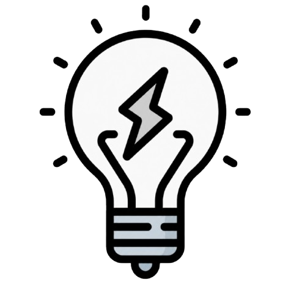
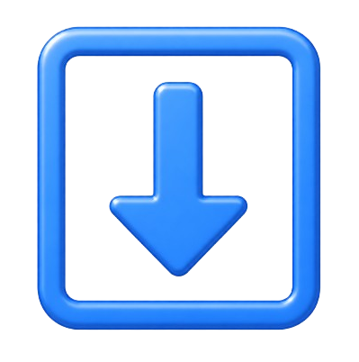

← Späť

Logs
Console
Devices
Errors
Delete
Show schematics
Learn about
Vyberte senzor:
Arduino Uno
Pico-2
Analog LM35 Temperature Sensor
URM09 Ultrasonic Distance Sensor
I2C Triple Axis Accelerometer
Digital Hall Sensor
Distance Measuring Sensor
Analog Slide Position
Heating machine
Magnet
Pridať komponent
